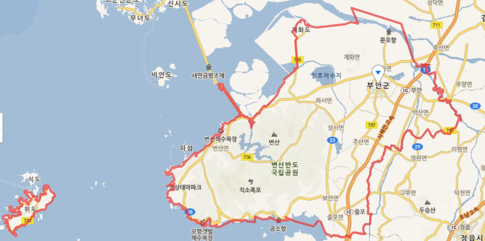
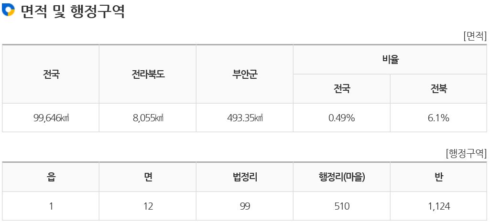
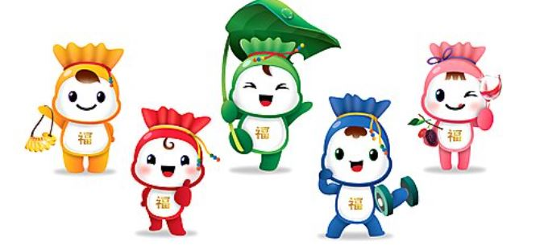

처음
부안 소개
부안역사
삼한시대
부안군은 삼한시대 마한(馬韓) 54개국 중 지반국(支半國)이 부안지역에 해당되는 것으로 추정하며 4세기경 백제의 남방정벌로 주변 세력들과 함께 백제에 항복하게 되었다.
백제시대
백제시대 부안 지역은 정치. 군사. 해양의 중요한 요충지로 자리 잡게 된다. 죽막동 해양제사 유적지가 있으며 주류성은 백제 멸망 후 백제부흥의 시작점이자 수도이기도 했다.행정상으로는 개화(皆火)와 흔량매(欣良買) 두 고을로 나뉘어 중방고사성(中方古沙城)에 속했다.신라시대
신라가 삼국을 통일한 후인 서기 757년(경덕왕 16)에 개화현(皆火縣)을 부령현(扶寧懸) 혹은 계발(械發)이라 고쳐 불렀고 흔량매현(欣良買縣)은 희안현(喜安縣)이라 고쳐 불렀으며 부령현과 희안현은 고부(古阜)의 속현이었다.고려시대
고려 때에는 희안현(喜安縣)을 보안현(保安顯)이라 고치고 부령현(扶寧縣)은 그대로 사용하였으며 별호(別號)로 희안현을 낭주(浪州), 부안현을 부풍(扶風)이라 부르기도 했다.보안현과 부령현은 고부부(古阜府)에 예속되어 있었으나 예종 때에 와서 부령에 감무라는 지방관을 두게 되었고 고려 말 우왕 때는 부령현과 보안현에 각각 감무(監務)를 따로 두게 되는데 조선조까지 유지되었다.조선시대
11414년(태종14)~1416년(태종16) 사이에 지방관제의 개정으로 부령현과 보안현의 합병과 해체가 몇 차례 이루어지다가 1416년에 부령(扶寧)의 부(扶)자와 보안(保安)의 안(安)자를 따서 부안현(扶安顯)이라 고쳐 불렀다. 그 이듬해에 흥덕진(興德鎭)을 폐하여 부안에 귀속시켜 부안진(扶安鎭)이라 하고, 병마사로서 판사를 겸하게 했으며, 1423년(세종5)에 첨절제사(僉節制使)로 바꾸었다가 현감으로 고쳤다. 1895년(고종32)에 전국의 부.목.군.현의 이름을 군(郡)으로 통일하면서 부안군(扶安郡)으로 불리게 되었다.일제강점기
1914년 일제치하에서 행정구역을 고치면서 위도(蝟島)는 전남 영광군으로, 비안도는 군산시로 떼어주고, 대신 고부군에서 백산(白山), 거마(巨麻), 덕림 (德林)의 3개면을 부안군에서 편입시켰다.1943년에는 부령면이 부안읍으로 승격되어 1읍 9면으로 되었다.현대
1963년 행정구역의 조정에 따라 전남 영광군의 위도면(蝟島面)이 부안군으로 편입되었다.1978년 계화도(界火島) 간척공사의 준공으로 3,968ha의 면적이 늘어났으며, 1983년에 산내면(山內面)에서 진서면(鎭西面)을 분리하여 계화면과 진서면이 새로 생겨났다. 현재의 행정구역은 1읍 12개면이며, 면적은 492.73㎢ (농경지 42%, 임야 42%, 기타 16%)이다. 우리 고장 부안군은 동경 126도 40분, 북위 35도 40분에 위치하고 있으며, 전라북도의 서쪽에 위치하며 군산시와는 바다로 접경하고, 북동으로 김제시, 남동으로는 정읍시, 남으로는 고창군과 접해 있다. 해안선은 동진강 하구에서부터 줄포면 우포리 까지 99km 였으나 새만금방조제가 완공되면서 현재 66 km의 해안선이 바다와 접해 있다. 동쪽이 낮고 서쪽이 높은 지형으로 황해에 불쑥 나와 있는 반도이며, 남서부는 변산이 겹겹이 싸여 있고, 북동부는 넓고 비옥한 평야를 이루고 있다. 이러한 지형적인 영향과 북서계절풍의 영향으로 겨울철엔 눈이 많이 내리는 기후적 특성을 가지고 있다.부안위치

[출처]:네이버 지도
전라북도 남서쪽 변산반도에 위치하여 서쪽이 황해에 면해 있는 군이다. 동쪽은 정읍시와 북쪽은 동진강하구를 경계로 김제시와 남쪽은 곰소만을 경계로 고창군과 인접한다. 서쪽은 황해로 위도면에 속하는 위도, 식도, 정금도, 거륜도, 상왕등도, 하왕등도 등의 섬이 있다.
부안인구

부안마스코트



{kind=link}